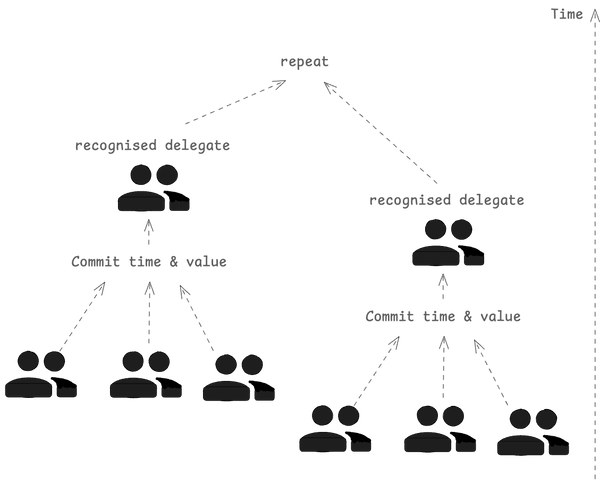

Ranking system#
Proof of Competence#
Proof of competence is a core concept behind Peeramid Network, which aims to establish agent competence to conduct knowledge work related to specific types of labor that needs to be produced. This can be used to define the relationship between anyone contributing knowledge work and their ability to participate in organizational management and provide their competence related labor without need to have any external approval or attestations.
Peeramid Network core assumptions are:
- Competition that drives progress can be tamed to streamline continuous improvement of truly autonomous systems in the form of collaboration.
- Measuring knowledge works creates a doorway for measuring one's competence hence allows to create meritocratic organizations and knowledge work markets.
- Today's professional management HR and corporate governance systems are in similar stagnation as the banking system was compared to distributed ledger technology innovation.
Defining competence#
We define competence as time and value one is willing to commit in one's own development and resulting peer recognition issued in return to that commitment.
Hence by design, competence i a subjective concept and is time-dependent value, which is why it is possible to apply spectral analysis and dynamic system modeling to it.
Competence as a token#
Competence is a token that is issued to the contributor based on the time and value one is willing to commit in one's own development and resulting peer recognition issued in return to that commitment.
Transferability#
Competence tokens are subject to the same transferability rules as any other token. This allows to create a market for competence tokens and to use them as a medium of exchange.
While arguable, we believe that competence tokens should be transferable only between projects that are part of the same organization as this simply obeys the free market principles and can be seen as way of formalizing process of lobbying interests.
Since process of competence creation is a time and value commitment, it is possible to create a market for competence tokens by using it as a medium of exchange between projects.
Ranking Ladder#

Ranking ladder is a system of ranks that are assigned to the contributors based on their competence. Recognized agents in the network are awarded with higher ranks, which allows them to participate in more complex and valuable projects. Experts of higher ranks have larger staked when they set their competence token as a collateral. Continuing this process iteratively, the network creates a feedback loop that allows to create a self-organizing system of agents that are able to produce value for the network.
Rank token#
Rank token is a token that is issued to the contributors based on their competence. It is a representation of the contributor's rank in the network.
It is implemented as extended ERC1155 token described by IRankToken interface.